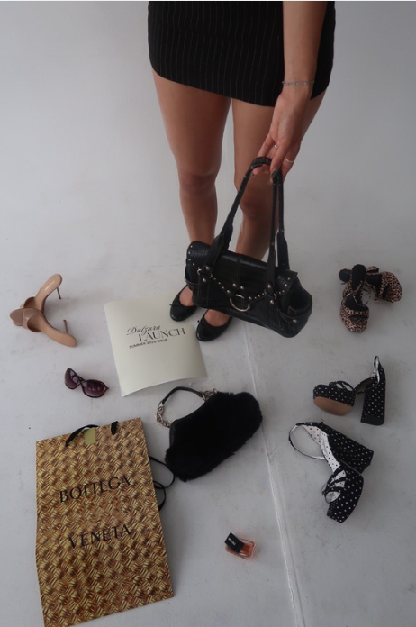

The Ultimate Guide to Packing Your Perfect Summer Suitcase

There is an art to zip closing a suitcase and knowing, with absolute certainty, that you didn't overpack, you just packed perfectly. Whether you're catching a flight to a European coastal town or packing the car for a spontaneous weekend road trip, your luggage shouldn't feel like a chaotic storage unit. The goal for summer travel is simple: pieces that look incredibly chic on camera, roll up into nothing, and work twice as hard by transitioning from a morning stroll to a candlelit dinner. We’ve done the research on what’s actually worth the luggage space this season. Forget the "just in case" items you never end up wearing.
This is the definitive, aesthetic guide to what is actually making the cut for your summer suitcase.
The Base Layers
When space is limited, your base pieces need to be versatile but distinctly stylish. Instead of packing ten different outfits, pack five key building blocks that mix and match effortlessly. • The Jorts & Capri Duo: Leave the heavy, skin tight denim at home. Instead, pack one pair of perfectly tailored jorts and one pair of sleek, minimalist capris. They lie completely flat in your suitcase, take up zero room, and instantly make any basic top look elevated. • The Multitasking Midi Skirt: A lightweight midi skirt in a neutral tone or a classic striped pattern is a non negotiable. Wear it over your swimsuit during the day, then style it with a belt for dinner. • The Dynamic Tops: Pack two vintage feeling graphic tees for exploring, and one cape sleeve top for when you want to look elevated without feeling restricted or overheated.
The Carry On Math
1 Pair of Jorts + 1 Capri + 1 Midi Skirt paired with 2 Graphic Tees + 1 Cape-Sleeve Top = 9 completely different outfit combinations.
The Wet to Dry Transition
Summer travel revolves around the water, but no one wants to run back to the hotel just to change for lunch. The runway collections this season leaned heavily into "beach to street" dressing, meaning your swimwear is the outfit.
Pack a classic bikini or an elegant one piece, but make sure to leave room for a swimwear dress or a chic tankini. Why? Because a swimwear dress functions as a gorgeous mini dress the second you step off the sand. Throw an oversized button down over a tankini, pair it with your capris, and you are instantly ready for an open air café.
Footwear
Shoes are the ultimate suitcase killers, they are heavy, bulky, and notoriously difficult to pack. To keep your bag light and your style high, you only need to pack two specific pairs. 1. The Daytime Explorer: A pair of low profile, flat skinny sneakers. Wear these on the plane to save space. They look incredibly cool and unexpected with midi skirts and capris, ensuring you can walk ten miles exploring a new city without a single blister. 2. Simply Versatile: A pair of flip flops in a fun, vibrant color or a simple black. They take up practically zero space, work for the pool, and add a sudden, playful splash of personality to your evening outfits
Space Saving Statements
Accessories are the secret weapon of a perfect suitcase. They take up almost no room but completely alter the vibe of your clothes, allowing you to wear the exact same base outfit twice without anyone noticing. ▪ One Statement Belt: A thick leather belt or a chunky buckle to instantly give your jorts structure and shape. ▪ A Silk Headscarf: Perfect for hiding messy beach hair, protecting your scalp from the sun, or tying around your neck like a retro film star. ▪ Fun Sunglasses: Bring one pair of chunky, colorful, or geometric frames. They instantly make a simple white tank top look like a totaly planned outfit.
Roll your clothes instead of folding them, leave a little extra room for souvenirs, and you're set.